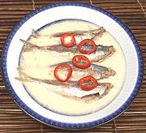

|
Fish with Vinegar & CoconutPhilippines - Paksiw na Galunggong | ||||
| Serves: Effort: Sched: DoAhead: |
2 main ** 20 min Most |
This very tasty dish is quick and easy to make (once you've cleaned the fish). Americans aren't accustomed to dealing with small bony fish but it's not difficult to learn (Note-3) - or you could use fillets instead. | |||
|
1-1/2 1/2 1/4 2 1 1/2 14oz |
# c c in T can |
Mackerel Scad (1) Vinegar (2) Water Green Chilis (3) Ginger Salt Coconut Cream |
In the Philippines the fish would likely be cooked head-on, but for simplicity, and to fit pans and dishes, I remove the heads. Also, some Americans are not used to dinner staring back at them.
|